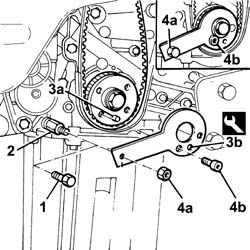
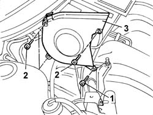
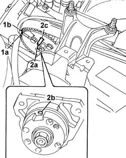
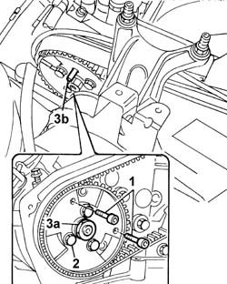

1060A20 injection pump - check timing and adjust
- Path
- Procedures > 10 ENGINE > 1060 DIESEL FUEL INJECTION > 1060A diesel injection pump and control > 1060A20 injection pump - check timing and adjust
- Kind
- repair procedure (removal / refitting; the operation number is the code)
- Applies to
- all engines; all production periods
- Interactive page
- https://sloeber94.github.io/elrnDB-fDbl/en/#/2584456
Applies to: all engines; all production periods
7055B54 under-engine guard - r r
1092G10 single engine belt r r
1092A10 Crankshaft services PULLEY - R.R.
1. Remove the engine oil pump retaining bolt.
2. Fit the pin of the tool for setting the engine precisely to TDC.
3. Turn the crankshaft a little at a time to allow locating dowel (3a) on the pulley to fit into the hole on tool (3b).
4. Lock the tool in position using a nut (4a) and ordinary bolt (4b).
 | Name | Country |
|---|---|---|
3a | Template | 1.860.905.000 |

Applies to: all engines; all production periods
1. Undo the lower bolts securing the guard.
Lower the lift.
2. Undo the upper bolts securing the guard.
3. Remove the timing belt right side guard.

Applies to: all engines; all production periods
1. Check notch (1a) on the injection pump control pulley is aligned with mark (1b) on the pump mount.
2. Insert cylindrical locating pin (2a) with an external diameter of 6mm and of sufficient length to be inserted 40 mm into hole (2b) on the pump shaft through the slot on the pulley.

Applies to: all engines; all production periods
If the pin can be easily inserted, the injection pump is adjusted to the correct advance value.
If the pin does not insert fully, the advance value must be adjusted.
1. Stop the injection pump pulley rotating by inserting two ordinary M6 bolts into the holes provided on the pulley.
2. Loosen the bolts securing the injection pump pulley.
3. Rotate the pump shaft using nut (3a) until the holes align so pin (3b) can be inserted

Applies to: all engines; all production periods
Tighten the pulley bolts to torque.
 | Fastening | Component | Ø | Value (daNm) |
|---|---|---|---|---|
- | Bolt | INJECTION PUMP TOOTHED DRIVE PULLEY | M8 | 2.5 |
Remove the two ordinary bolts used for locking the injection pump pulley.
Remove the locating pin from the injection pump.
Remove the tool for correctly measurement of TDC
| Name | Country |
|---|---|---|
- | Template | 1.860.905.000 |
Rotate the crankshaft through two revolutions in its normal direction of rotation.
Check the locating pin inserts into the hole on the injection pump (for about 40mm)
Fit the timing belt right side guard.
| Fastening | Component | Ø | Value (daNm) |
|---|---|---|---|---|
- | Bolt | BELT PROTECTION COVER | M6 | 0.9 |
Tighten the oil pump front cover retaining bolts to torque.
| Fastening | Component | Ø | Value (daNm) |
|---|---|---|---|---|
- | Bolt | CRANKSHAFT FRONT COVER | M6 | (Crankcase) 0.9 |
1092A10 Crankshaft services PULLEY - R.R.
1092G10 single engine belt r r
Topics linked from this page (4)
- 1092A10 Crankshaft services PULLEY - R.R.
- 1092G10 single engine belt r r
- 4450B04 right front wheel r r
- 7055B54 under-engine guard - r r